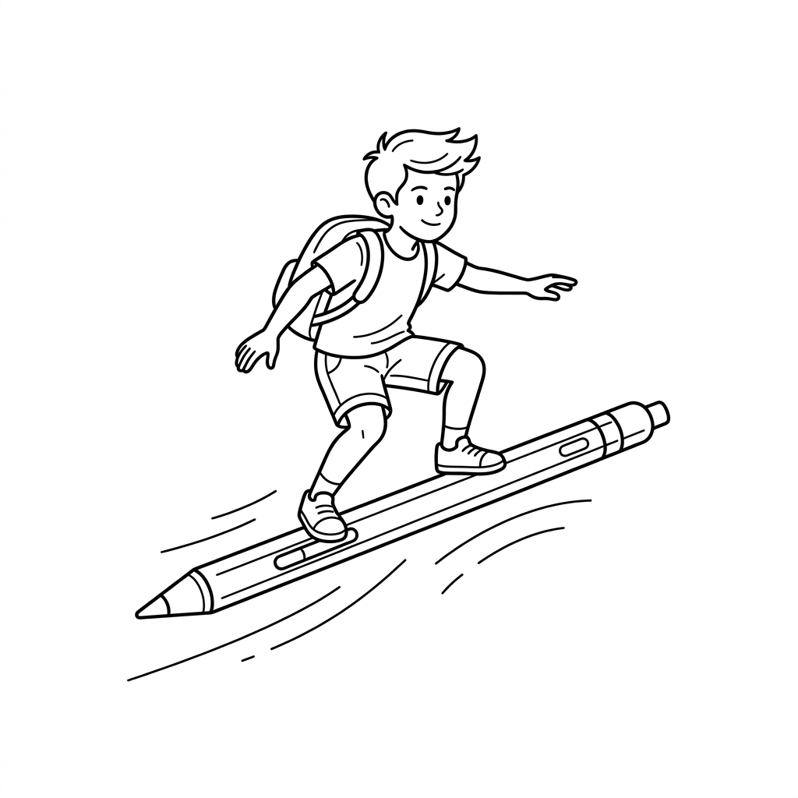

Smarter Learning. Lighter Future.
The premium digital notebook device for the next generation.

We believe handwriting is the ultimate interface for human thought. Noto isn't a tablet — it's a living canvas designed to bridge the gap between creative intuition and digital efficiency.
Paper production is the 4th largest contributor to greenhouse gas emissions among manufacturing industries. By switching to Noto, you help protect more than just trees.